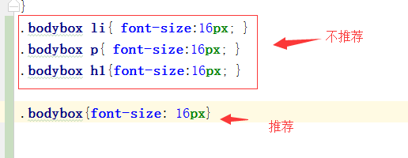

唐山现代男科项目规范
( 2 )代码规范_02(css篇)
-
- 11.尽可能的利用css的继承性来书写样式，避免样式多余和重复
- 
-
- 12. 采用优雅降级的方式进行兼容性

-
- 13.尽量避免使用!imporant来提高 css的权重，以免引起不必要的冲突

-
- 14.尽量减少css文件的数量，公共组建样式写在公共，能用精灵图的情况下尽量使用精灵图，减少http请求次数
-
css文件能够提取公共部分的劲量提取公共部分作为，然后放于公共样式中，比喻说一些按钮的样式，全局都会用到；
精灵图是将很多图片和并在一张图中，通过改变图片的位置来展示不同图片，这样大大减少http对图片的请求数量
-
- 15.用class来书写样式时注意类名应该是BEM命名规范
-
BEM的意思就是块（block）、元素（element）、修饰符（modifier）,是由Yandex团队提出的一种前端命名方法论。这种巧妙的命名方法让你的CSS类对其他开发者来说更加透明而且更有意义。BEM命名约定更加严格，而且包含更多的信息，它们用于一个团队开发一个耗时的大项目
-
参考地址：http://blog.csdn.net/chenmoquan/article/details/17095465
-
- 16.尽量使用样式继承，避免样式重复写,当样式值设置为0的时候不要加单位

-
- 17.选择更优的样式属性值
-
CSS中有些属性采用不同的属性值，虽然达到的效果差不多，当性能上却存在着差异，如
区别在于border:0把border设为0px，虽然在页面上看不见，但按border默认值理解，浏览器依然对border-width/border-color进行了渲染，即已经占用了内存值。
而border:none把border设为“none”即没有，浏览器解析“none”时将不作出渲染动作，即不会消耗内存值。所以建议使用border:none;
上一页
下一页